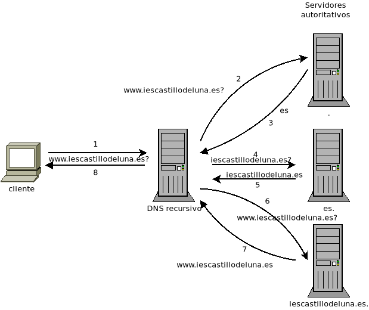

6.2.1. Protocolo¶
Ya hemos contando cómo fue históricamente el primer sistema de resolución de nombres: un simple archivo local que las escasas máquinas conectadas a Internet intercambiaban. Cuando su número lo hizo inviable se adopto una estrategia distinta: jerarquizar los nombres.
6.2.1.1. Nombres¶
Así, este ejemplo:
es el nombre cualificado de una máquina llamada «www». Dicha máquina se encuentra dentro de un dominio llamado «iescastillodeluna.es» que a su vez se encuentra dentro de un dominio llamado «es». Si lo repasamos al revés:
Hay un dominio de primer nivel, de nivel superior o TLD por sus siglas en inglés. La autoridad encargada de aprobar cuáles son todos estos dominios es la ICANN, cuya gestión delega en una organización que recibe el nombre genérico de NIC. A este nivel pertenecen:
Los dominios geográficos, que usan los códigos de pais de dos letras asignados en la ISO 3166-1 como «es» para España o «pt» para Portugal.
Los dominios genéricos, que tienen más de dos letras («com», «net», «info», etc.).
Ver también
El artículo de Wikipedia Dominio de nivel superior profundiza bastante más en los distintos tipos de dominios de primer nivel.
Hay un dominio de segundo nivel, registrado dentro de un dominio de primer nivel. En el ejemplo «iescastillodeluna.es» es un dominio de segundo nivel registrado dentro del dominio de primer nivel «es». Por lo general, los dominios de segundo nivel pertenecen a organizaciones (una empresa, un organismo público, una persona particular) que lo utiliza para registrar dentro de él nombres de máquina, como es el caso del ejemplo puesto. No obstante, pueden definirse dominios de tercer nivel y dentro de este de cuarto y así hasta el infinito, según el propietario del dominio decida segmentar los nombres de su organización.
Nota
En ocasiones, el NIC de un dominio de primer nivel se reserva la gestión de dominios de segundo nivel como es el caso de algunos NIC geográficos que han reproducido dentro de su dominio, algunos de los dominios de primer nivel definidos por la ICANN. Por ejemplo, en el dominio «es» los dominios «com.es», «org.es» o «edu.es» están reservados por el NIC con la intención de que las organizaciones particulares adquieran dominios de tercer nivel dentro de ellos (p.e. el dominio «larioja.edu.es» lo tiene adquirido la Consejería de Educación de La Rioja con fines educativos).
Hay, finalmente, un nombre de máquina. La expresión completa del nombre junto al dominio recibe el nombre de nombre cualificado (o FQDN). En el ejemplo, pues, el nombre de la máquina es «www» y su nombre cualificado «www.iescastillodeluna.es».
Nota
Por lo general, la contratación de un dominio al NIC gestor por parte de un particular sólo está supeditada a que tal dominio esté libre. Por ejemplo, si deseáramos contratar el dominio «pericodelospalotes.es» el único requisito es que tal dominio esté disponible, esto es, que otro particular no lo haya contratado antes. Sin embargo, existen dominios en que la contratación está restringida y la petición sólo se hace efectiva si el organismo regulador la aprueba. Por ejemplo, para que el NIC.es acepte una solicitud de un subdominio dentro de «edu.es», el solicitante debe acreditar que es un organismo educativo o investigador.
6.2.1.2. Jerarquía¶
¿Cómo se implementa esta jerarquía de nombres? Mediante un conjunto de servidores de nombres (DNS) también jerarquizados:
La ICANN se encarga de gestionar los denominados servidores raíz, 13 en total. Estos servidores son los encargados de indicar cuáles son los servidores encargados de gestionar los TLD, por lo que podríamos considerarlos como los servidores de nivel 0. Todos contienen la misma información y la existencia de varios responde a una necesidad de redundancia. Si el servidor fuera único, toda la resolución de nombres dependería de un único servidor, por lo que un fallo en él, sería catastrófico. Esta redundancia existe también en los servidores DNS del resto de niveles. En la figura, sin embargo, hemos evitado mostrar la redundancia para simplificar el esquema.
Nota
Para la implementación de la redundancia (al menos en servidores por debajo de los TLD), se define un servidor maestro (también llamado servidor primario) en el que se hace la definición de resoluciones del dominio y uno o varios servidores llamado (servidor esclavo o servidor secundario) que se sincroniza con éste cada cierto tiempo copiando sus definiciones.
Cada TLD, a cargo de un NIC por su parte, refiere los servidores DNS que gestionan los dominios de segundo nivel que jerárquicamente depende de él. Por ejemplo, como se ilustra en la figura, el TLD de «es» referirá, entre otros muchos, cuáles son los servidores DNS que gestionan los dominios «iescastillodeluna.es», «moncloa.es» o «uca.es». Si existieran dominios de nivel inferior (tercer nivel), los servidores que los gestionan se refieren en el DNS que gestiona en el nivel correspondiente inmediatamente superior.
Todos los servidores que se han ilustrado en la figura son servidores DNS autoritarios para su dominio correspondiente, esto es, son los servidores DNS en los que están hechas las definiciones para la resolución de los nombres de ese dominio.
Por tanto, a diferencia de cómo originalmente se resolvían nombres, donde todas las definiciones estaban concentradas en un mismo sitio (un archivo), en el sistema DNS la base de datos está distribuida, de modo que cada servidor autoritario contienen únicamente las resoluciones referentes a su dominio.
Aunque la obtención de un subdominio exige su contratación con el NIC gestor del TLD, porque es éste el encargado de añadir su registro en el servidor DNS correspondiente, lo habitual es que el particular haga la contratación a través de un intermediario acreditado que recibe el nombre de agente registrador1. Aunque la función principal del agente registrador sea la de intermediar con el NIC para las tareas relacionadas con el dominio (contratación, traspaso, renovación, etc.), suele ofrecer a sus clientes servicios adicionales:
Un servidor DNS para alojar los registros del dominio contratado. Esto ahorra al cliente el mantenimiento de un servidor DNS propio.
Un servidor de correo básico con al menos una cuenta definida.
Nota
Un servidor DNS no tiene por qué gestionar un único dominio. De hecho, lo habitual es que los dominios de segundo nivel contratados por particulares estén gestionados por el servidor DNS2 del agente registrado que haya usado como intermediario para la contratación.
6.2.1.3. Resolución¶
En principio, partiendo de la jerarquía anterior, para resolver el nombre «www.iescastillodeluna.es», el cliente:
Consulta a alguno de los servidores raíz, cuáles son los TLD del dominio «es», a lo cual responderá uno de los raíz con la lista de todos ellos.
Volverá a realizar otra consulta, esta vez a alguno de los TLD facilitados para que le facilite las direcciones IP de los servidores que gestionan el dominio «iescastillodeluna.es».
De la respuesta, escogerá uno de ellos para consultar cuál es la IP de la máquina «www.iescastillodeluna.es».
Para ilustrar esto, podemos hacer la siguiente consulta3:
$ dig +trace www.iescastillodeluna.es
Esto, no obstante, es poco eficiente: el cliente tiene que hacer varias peticiones para obtener la resolución que desea y, además, todos los clientes tendrían que hacer consultas a los servidores raíz lo que podría sobrecargarlos de tráfico. En la práctica existen repartidos por internet muchos servidores DNS recursivos cuya misión es aceptar las peticiones de los clientes que a ellos se dirijan, averiguar la dirección IP del nombre requerido haciendo consultas a los servidores autoritarios correspondientes siguiendo la descripción expuesta arriba, y cachear el resultado el tiempo que el propietario del nombre haya establecido. De este modo, si otro cliente (o el mismo cliente) repiten la consulta dentro del tiempo de vigencia del registro, devolverán directamente el resultado, sin volver a preguntar a los servidores autoritarios:
Advertencia
En un cliente debe usarse como servidor DNS un servidor recursivo, no un servidor autoritario. De hecho, éste último servidor normalmente tiene deshabilitadas las consultas recursivas, pro lo que sólo sirve para hacerle consultas sobre nombres de su propio dominio..
Hay muchos servidores recursivos:
Los del propio ISP.
Los de Google: 8.8.8.8 y 8.8.4.4.
Los de Quad9: 9.9.9.9 y 149.112.112.112.
Los de OpenDNS: 208.67.222.222 y 208.67.220.220.
Los de Cloudflare: 1.1.1.1 y 1.0.0.1.
etc.
6.2.1.4. Puertos¶
Los servidores DNS escuchan en los puertos 53/UDP y 53/TCP. El tráfico UDP se deja para consultas cuya respuesta es corta (512 bytes que es la cantidad de datos efectivos que puede albergar un paquete UDP de DNS). Si la respuesta es larga, el servidor obliga al cliente a hacer la consulta usando TCP. El problema es que, según se han ido añadiendo funcionalidades al protocolo (como DNSSEC), el tamaño de las respuestas ha ido creciendo.
Nota
En 1999 se propuso EDNS, que permite ampliar a 4KB el tamaño de paquete, pero no se ha implementado de forma universal.
DNS es un protocolo antiguo por lo que es totalmente inseguro y cualquier interceptor de la comunicación puede saber qué consultas se están haciendo. Para paliar esto surgió:
DNS mediante TLS, también conocido como DoT, que cifra el tráfico DNS gracias al protocolo TLS. Los servidores escuchan en el puerto 853/TCP. Algunos servidores DNS, lo soportan:
$ dig www.iescastillodeluna.es +tls @9.9.9.9DNS mediante HTTPs, también conocido como DoH, que encapsula el tráfico DNS dentro de tráfico HTTPs. Obviamente, los servidores escuchan en el puerto 443/TCP. La ventaja de este metodo es que su tráfico es indistinguible del tráfico HTTPs legítimo. También algunos servidor DNS recursivos, lo soportan:
$ dig www.iescastillodeluna.es +https @9.9.9.9
Nota
Obviamente, usar estos protocolos seguros implica que el dispositivo del cliente los soporte. En principio, los navegadores modernos como Firefox o los derivados de Chromium soportan la posibilidad en su configuración. También es posible instalar un servidor proxy en la máquina que escuche en el puerto 53 de la interfaz local y haga peticiones seguras mediante TLS o HTTPs. Un ejemplo de ello, con paquete en Debian, es dnss.
6.2.1.5. Registros¶
Los servidores autoritarios de un dominio incluyen las definiciones de resolución para tal dominio. A este respecto más que de dominio se habla de «zona», ya que también definirse resoluciones para una red (resoluciones inversas). Las definiciones toman la forma de registros: cada registro es una definición distinta y se escribe con una línea de este aspecto:
<nombre_registro> [<TTL>] IN <tipo_registro> <valor_registro>
La definición de una zona se compone de una lista de registros de distinto tipo como la de arriba, algunos son obligatorios y otros opcionales.
TTL es el tiempo de vida del registro, esto es, el tiempo máximo que el registro puede ser cacheado por algún servidor recursivo, que haya consultado la resolución. Puede no especificarse y, en ese caso, el TTL del registro será el que se haya definido para la zona entera.
El nombre del registro y su valor dependen de cuál sea el tipo y, por último, éste puede ser:
- SOA
Es un registro obligatorio (toda zona tiene definido uno y solamente uno) que describe algunas características de la propia zona y del resto de registros. Un registro SOA típico tiene el siguiente aspecto:
@ IN SOA ns1 hostmaster.iescastillodeluna.es. ( 1 ; Serial 604800 ; Refresh 86400 ; Retry 2419200 ; Expire 86400 ; Negative Cache TTL )
Téngase presente en esta definición:
El nombre es «@» que significa esta zona o este dominio. Si estuviéramos definiendo la zona del dominio «iescastillodeluna.es», la «@» equivale a «iescastillodeluna.es.».
Nota
Obsérvese el punto con que acaba la expresión el dominio. No es una errata. Al definir una zona, el software de servidor (bind al menos) añade a los nombres siempre la expresión del dominio. El punto indica que no queremos añadirlo. Por tanto, escribir «iescastillodeluna.es» sin punto equivale a haber escrito «iescastillodeluna.es.iescastillodeluna.es.».
El valor se compone de tres miembros:
El nombre de la máquina que contiene el archivo: «ns1» en este caso que como no tiene punto se convierte en «ns1.iescastillodeluna.es».
El correo electrónico del encargado de mantener el archivo, aunque sustituida «@» por un punto. Por tanto, el correo sería «hostmaster@iescastillodeluna.es»
Parámetros de configuración que se escriben entre paréntesis porque se han usado varias líneas por claridad:
La versión del archivo. Algunos administradores gustan de utilizar como número la fecha de actualización del archivo (p.e. 20221002, si se actualizó el 2 de octubre de 2022).
El tiempo de refresco que es el periodo de tiempo que deja trascurrir un servidor esclavo entre dos solicitudes de transferencia al servidor maestro para sincronizarse.
El tiempo de reintento que el tiempo que deja pasar un servidor esclavo para repetir una solicitud de transferencia, en caso de que la anterior fallara.
El tiempo de expiración que es el tiempo durante el cual se considera válida la información que proporciona un servidor esclavo que no puede sincronizarse con el maestro. Si este tiempo vence, el esclavo dejará de atender peticiones de clientes para la zona que no ha podido sincronizar.
TTL de todos los registros definidos dentro de la zona para los que expresamente no se haya definido uno.
- A
Define cuál es la dirección IP que corresponde a un nombre. Por ejemplo, el registro:
www IN A 80.81.82.83establece que la máquina «www.iescastillodeluna.es» tiene la IP arriba indicada (recuérdese el efecto de no acabar los nombres con un punto).
- NS
Define cuál es el servidor de nombres para el dominio que se especifique en el nombre del registro. Por ejemplo, en el TLD de «es» debe de haber registro parecido a este:
iescastillodeluna IN NS ns1023.ui-dns.de.ya que en la definición de la zona de un dominio deben referirse los servidores DNS en los que se delega la gestión de los subdominios. En realidad, nunca hay un único servidor DNS para resolver una zona, sino varios (un maestro y al menos un esclavo), por lo que en la zona «es» lo que habrá más bien es esto4:
iescastillodeluna IN NS ns1023.ui-dns.de. NS ns1037.ui-dns.org. NS ns1045.ui-dns.com. NS ns1025.ui-dns.biz.
O sea, en un servidor maestro y tres esclavos5. Obsérvense dos cosas:
El valor de estos registros es también un nombre de máquina, no directamente una IP.
En este caso, la definición de la zona «iescastillodeluna.es» se encuentra en unos servidores DNS dedicados a gestionar muchas zonas distintas, como ocurre habitualmente con los dominios que pertenecen a particulares, a los que proporciona este servicio el agente registrador. ¿Cuáles son las IP de estos servidores? Las que se definan en las zonas correspondientes: «ui-dns.de», «ui-dns.org», etc.
Centrándonos en esta última particularidad, cabría otra posibilidad como la que ocurre con el dominio «google.com» definido en el TLD de «com»:
$ dig -tns google.com +short ns2.google.com. ns3.google.com. ns1.google.com. ns4.google.com.
Los servidores de nombres de la zona «google.com» tienen nombres del propio dominio «google.com». Por ejemplo, «ns1.google.com». Bien, necesito conocer su dirección IP para poder usarlo. Pero esa dirección IP está definida… en el propio «ns1.google.com», así que ¿cómo la averiguo? Esta referencia circular se soluciona incluyendo, además de la definición del registro NS, la definición del registro :kbd.`A` correspondiente. Este registro A definido en la zona superior («com» en este caso), complementando al registro NS, se conoce como glue record:
google IN NS ns1.google ns1.google IN A 216.239.32.10
Nota
Es importante llegar a entender dos cosas:
La jerarquización de los nombres en dominios y subdominos se logra gracias a este tipo de registro NS. Así, que se delegue la gestión del subdominio «iescastillodeluna.es» en un servidor se logra gracias a la inclusión de un registro NS en la definición de la zona «es».
"Comprar" un dominio es, simplemente, adquirir el derecho a que el NIC correspondiente incluya el registro NS en el TLD que gestiona. Y, en realidad, la compra no es tal compra, sino más bien un alquiler, ya que el derecho se paga por un plazo de tiempo determinado (un años, dos años, cinco años), pasado el cual o se renueva tal derecho o el NIC borrará el registro.
- MX
Registro que indica cuál es el servidor de correo del dominio. Obsérvese que una dirección de correo es de la forma
usuario@dominio, por lo que en ella no se expresa cuál es el servidor al que debe remitirse el mensaje cuando se usa como destinatario. Quien define cuál es ese servidor es este registro MX:@ IN MX 1 mailEn este caso el servidor de correo (MX) del domio «iescastillodeluna.es» es la máquina «mail.iescastillodeluna.es». El valor, no obstante, tiene dos componentes: el nombre de la máquina y la prioridad (1 en este caso). Cuanto menor sea este número natural, mayor la prioridad. Obviamente, si el nombre de la máquina pertenece al dominio. habrá de añadirse un registro A para defiinir la dirección IP:
mail IN A 80.81.82.84- CNAME
Permite definir un nombre alternativo para una máquina:
smtp IN CNAME mailEn este caso «smtp» es un alias de la máquina «mail», cuya dirección habrá tenido que definirse antes mediante un registro A.
- TXT
Almacena en su valor información arbitraria6 de texto que puede usarse para distintos fines. Un ejemplo son los registros SPF para evitar el spam en el correo electrónico:
$ dig -ttxt gmail.com +noall +answer gmail.com. 282 IN TXT "v=spf1 redirect=_spf.google.com" gmail.com. 282 IN TXT "globalsign-smime-dv=CDYX+XFHUw2wml6/Gb8+59BsH31KzUr6c1l2BPvqKX8="
- SRV
Este tipo de registros sirv para declarar qué máquinas albergan detérminados servidos (de ahí su nombre SeRVice), además de para establecer una preferencia entre ellas para el caso de que existan varias dedicadas al mismo servicio. Puede entenderse, por tanto, como una generalización del registro MX, que solo sirve para correo electrónico.
Tienen este aspecto (lo definimos para el servicio HTTP):
_http._tcp.www IN SRV 0 2 80 www SRV 0 1 80 www2 SRV 1 1 8080 w3
En estas líneas:
El nombre del registro especifica que se pide a la URL «www.iescastillodeluna.es» el servicio HTTP de la capa de transporte TCP.
El valor tiene, a su vez, cuatro campos:
La prioridad (cuanto más baja, mayor).
El peso dentro de una misma prioridad.
El puerto de escucha.
El nombre de la máquina que proporciona el servicio.
El ejemplo en concreto significa: consulta prioritariamente las máquinas «www.iescastillodeluna.es» y «www2.iescastillodeluna.es» por el puerto 80, la primera el doble de veces que la segunda; y sólo en caso de que estas estén inaccesibles, consulta por el puerto 8080 la máquina «w3.iescastillodeluna.es».
Estos registros, aunque pueden definirse para cualquiera, no se usan en todos los servicios (de hecho, es imposible si la especificación del servicio es anterior a la introducción del tipo de registro7). De hecho, HTTP es uno de esos servicios en los que no se usa, aunque se haya puesto de ejemplo.
Ver también
Para más información sobre este registro, consulte esta documentación.
- PTR
Es el registro inverso a A. Por tanto, permite asociar un nombre a una dirección IP. Estos registros se encuentran en las zonas de resolución inversa (o sea, en las que pretenden definir la resolución en una red y no en un dominio). Por ejemplo:
25.0 IN PTR oki-printer.iescdl.es.supuesto que esté en el archivo que define las resoluciones en la red
172.22.0.0/16, define que la IP172.22.0.25tiene por nombre «oki-printer.iescdl.es».- RRSIG/DS/DNSKEY/NSEC/NSEC3/CDNKEY/CDS
Son registros relacionados con la implementación de DNSSEC.
6.2.1.6. DNSSEC¶
Ver también
Consulte el epígrafe dedicado a definirlo.
6.2.1.7. Glosario¶
Para terminar referiremos algunas definiciones, gran parte de las cuáles ya están recogidas bajo los epígrafes anteriores:
- Servidor autoritario
Es el servidor con información sobre una determinada zona. En cambio, es no autoritario si para proporcionar cierta información a un cliente necesita preguntársela a otro servidor.
- Consulta recursiva
Es la consulta que un servidor realiza repetidamente a otros con el fin de poder dar respuesta a una resolución requerida por un cliente. La razón de que se denomine recursiva se observa muy bien en la figura que ilustra una.
- Servidor maestro
Es el servidor autoritario en el que originariamente se registra la información sobre una zona.
- Servidor esclavo
Es el servidor autoritario que replica la información de zona facilitada por el servidor maestro, gracias a que periódicamente se sincroniza con éste.
- Resolución directa
Es la resolución que permite obtener una dirección IP a partir de un nombre de máquina.
- Resolución inversa
Es la resolución que permite obtener un nombre de máquina a partir de una dirección IP.
Notas al pie
- 1
Por ejemplo, esta es la lista de agentes registradores para dominios dependientes de NIC.es.
- 2
En realidad, el agente registrados dispondrá varios servidor DNS, pero no porque tenga que gestionar muchos dominios, sino porque se necesita, como ya explicamos, redundancia.
- 3
No parece funcionar correctamente en la versión 9.18.
- 4
No es que seamos muy listos, es que hemos hecho previamente la consulta:
$ dig -tns iescastillodeluna.es +noall +answer- 5
¿Cuál es el maestro de los cuatro? No es realmente importante saberlo, pero si somos curiosos, podemos consultar el registro SOA a ver en qué máquina se encuentra la definición de la zona:
$ dig -tsoa iescastillodeluna.es +short ns1037.ui-dns.org. hostmaster.1und1.com. 2017060116 28800 7200 604800 600
Por lo que parece, el servidor maestro es «ns1037.ui-dns.org».
- 6
La información puede ser arbitraria. Normalmente, responde a algún fin.
- 7
El registro se introdujo a través del RFC 2052 a finales de 1996, aunque su formulación actual es del año 2000 (RFC 2782).